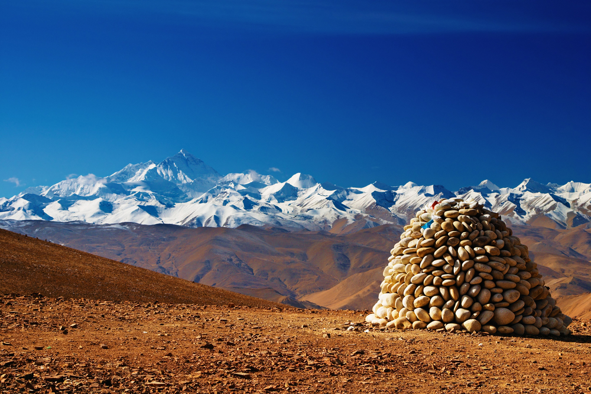

There are journeys that take you to new places, and then there are journeys that take you to the depths of your soul. The pilgrimage to Mount Kailash and Lake Mansarovar is undoubtedly the latter. Standing at 6,638 meters, where heaven meets earth, is not just about reaching a destination—it's about awakening to a higher consciousness and connecting with the divine.

The Spiritual Call of Kailash
For millennia, Mount Kailash has called to spiritual seekers across religions and cultures. In Hinduism, it's considered the abode of Lord Shiva. For Buddhists, it's the center of the universe. Jains believe their first Tirthankara attained enlightenment here, while Bonpos regard it as the soul of their tradition. My own call came not as a sudden revelation, but as a gentle, persistent whisper that grew louder with each passing year.
For ten years, I dreamed of undertaking this yatra. Life's responsibilities—family, career, societal obligations—kept postponing the journey. But as I turned forty, I realized that some calls cannot be ignored forever. The mountain was waiting, and my soul was yearning. With blessings from elders and determination in my heart, I began preparations for what would become the most transformative experience of my life.
"When you realize Kailash is not a mountain to conquer but a consciousness to awaken to, the journey truly begins." — Ancient Pilgrim Saying
The preparation was as much internal as external. I spent months studying ancient texts, practicing meditation, and learning about the rituals associated with the pilgrimage. Physically, I trained my body for high altitudes and long treks. Spiritually, I prepared my mind through contemplation and prayer. This dual preparation proved essential for what lay ahead.
The Pilgrim's Path: From Kathmandu to the Sacred Land
The Gateway: Kathmandu to Simikot
The journey begins in Kathmandu, where pilgrims gather for official briefings and receive blessings at Pashupatinath Temple. The flight to Nepalgunj and then to Simikot offers breathtaking views of the Himalayan range. Simikot, at 2,900 meters, serves as our first acclimatization stop and a reminder that we're entering remote territory where modern comforts gradually give way to spiritual focus.
From Simikot, we trek to Hilsa at the Nepal-China border. This section introduces us to the rhythm of pilgrimage—early mornings, simple meals, and the growing sense of leaving the mundane world behind. Crossing the border into Tibet feels like stepping into another dimension, both geographically and spiritually.

The drive from the border to Lake Mansarovar takes us through the vast, open landscapes of the Tibetan plateau. At 4,590 meters, the first glimpse of Mansarovar appears like a mirage—a vast sheet of turquoise blue surrounded by snow-capped peaks. The sight is so profoundly beautiful that many pilgrims break into tears or spontaneous prayer.
First Darshan: The Southern Face of Kailash
From Mansarovar, we proceed to Darchen, the base camp for the Kailash parikrama (circumambulation). But first, we visit the Astapad viewpoint for our first clear darshan of Mount Kailash. Nothing prepares you for this moment. The mountain rises in perfect symmetry—a massive pyramid of black rock capped with eternal snow, seeming both impossibly distant and intimately close.
I sat in meditation for hours, watching the play of light and shadow on the mountain's face. As the sun set, turning the snow golden, then pink, then crimson, I understood why sages have called Kailash the "axis mundi"—the world axis. Here, time seems to stand still, and the boundary between physical and spiritual realms becomes permeable.
The Sacred Circumambulation: Walking Around the Axis of the World
The Kailash parikrama is a 52-kilometer trek around the mountain, traditionally completed in three days. This isn't merely a physical journey—it's a spiritual practice representing the cycle of birth, death, and rebirth. Pilgrims believe that completing one parikrama cleanses the sins of a lifetime.
We began at Yam Dwar, the "Gate of the God of Death," where pilgrims traditionally leave behind their attachments and false identities. From here, the path winds through the Lha Chu valley, with Kailash always visible on our right side—a constant companion and reminder of why we're here.

The Challenge of Dolma La Pass
The second day presents the greatest physical challenge: crossing the Dolma La Pass at 5,636 meters. The altitude makes every step an effort, but the spiritual energy is palpable. Prayer flags by the thousands mark the pass, their mantras carried by the wind to all corners of the universe.
At the summit, pilgrims leave something behind—a piece of clothing representing past karma, a lock of hair symbolizing attachment, or simply a prayer. I left a small stone from my homeland, releasing old burdens to the mountain winds.
The Descent and Completion
After Dolma La, the descent begins through the Gauri Kund valley. According to legend, this is where Goddess Parvati bathes. The third day completes the circle, bringing us back to where we started—yet we are not the same people who began the journey.
Completing the parikrama brings an indescribable sense of peace and accomplishment. But more than achievement, it brings understanding. You realize that the mountain hasn't changed—you have. The external journey around Kailash mirrors the internal journey toward self-realization.
The Sacred Waters: Lake Mansarovar
Ritual Bath and Spiritual Cleansing
After the parikrama, we returned to Mansarovar for the holy dip. At 4,590 meters, the water is freezing cold, even in summer. But the spiritual significance overrides physical discomfort. Hindus believe bathing in Mansarovar cleanses all sins, while drinking its water brings liberation.
The experience is transformative. As I immersed myself in the sacred waters, watching Kailash reflected perfectly in the lake's surface, I felt a profound purification—not just physical, but emotional and spiritual. The boundary between lake and sky, mountain and reflection, self and divine seemed to dissolve.
Circumambulation and Meditation
Many pilgrims also complete a parikrama of Mansarovar—a 102-kilometer walk that takes 3-4 days. I chose to spend my time in meditation by the lakeshore, watching the ever-changing play of light on water and mountain. Here, time takes on a different quality. Days merge into one another, marked only by prayer times and the movement of shadows across the sacred landscape.
"As Mansarovar reflects Kailash perfectly, may my mind reflect the divine perfectly." — Pilgrim's Prayer
The Connection Between Mountain and Lake
Kailash and Mansarovar are spiritually inseparable—the masculine and feminine principles, consciousness and its reflection, Shiva and Shakti. Spending time in contemplation of their relationship teaches profound lessons about unity, balance, and the nature of reality itself.

Practical Guide for Future Pilgrims
When to Undertake the Yatra
The Kailash Mansarovar yatra season is short—typically from May to September, with the best conditions in June and September. I went in early September and experienced clear skies with fewer pilgrims than peak season. Avoid monsoon months (July-August) as landslides can make roads treacherous.
Physical and Spiritual Preparation
This journey demands both physical stamina and spiritual readiness. I recommend:
- Cardiovascular training for 3-4 months prior
- Practice trekking with a backpack at high altitudes if possible
- Regular meditation and prayer practice
- Study of relevant scriptures and rituals
- Mental preparation for basic facilities and challenging conditions
Remember: This is a pilgrimage, not a trekking holiday. The mindset is as important as physical fitness.
Essential Items to Pack
Pack light but wisely. Essential items include:
- High-quality four-season sleeping bag
- Layered clothing for extreme temperature variations
- Sturdy, broken-in waterproof hiking boots
- Down jacket and thermal layers
- Sun protection: high SPF, sunglasses, hat
- Personal puja items and offerings
- Water purification tablets
- Basic first aid kit and altitude medication
- Headlamp with extra batteries
- Trekking poles for the parikrama
Pilgrim's Wisdom
- Carry a mala: Mantra repetition helps with both altitude and focus.
- Respect local customs: Tibet has its own sacred traditions alongside Hindu/Buddhist practices.
- Go slowly: The altitude demands it, and spirituality thrives in slowness.
- Keep a journal: Insights come continuously; record them daily.
- Practice gratitude: Thank guides, drivers, and fellow pilgrims regularly.
Choosing a Pilgrimage Group
While independent travel to Kailash is nearly impossible for foreigners, choosing the right group is crucial. Look for organizers that:
- Have experience with spiritual pilgrimages, not just adventure tourism
- Provide knowledgeable guides who understand the pilgrimage's significance
- Include proper medical support and emergency evacuation plans
- Respect the environment and local Tibetan culture
- Offer balanced itineraries with adequate acclimatization time
Cost Considerations
Expect to pay between $2,500 to $4,000 for a standard 15-20 day pilgrimage from Kathmandu, depending on group size and level of comfort. This typically includes permits, transportation, accommodation, meals, and guide services. Additional costs include international flights, travel insurance, gear, and donations at temples.
The Return: Carrying the Sacred Within
Leaving Kailash was the most difficult part of the journey. As our vehicle pulled away, I kept looking back until the mountain disappeared from view. But I realized I wasn't leaving Kailash behind—I was carrying it within me. The external pilgrimage was ending, but the internal one was just beginning.
Back in Kathmandu, amidst the noise and chaos of the city, I found a profound stillness within. The mountain had taught me that peace isn't found in external circumstances but in inner alignment. The clarity I gained at 5,000 meters remained with me at sea level.

The Kailash Mansarovar pilgrimage changed me in ways I'm still discovering. It dissolved boundaries—between religions, between nations, between self and other. I went seeking Lord Shiva but found that the divine was everywhere, in everything, and especially within.
This journey is not for everyone. It demands physical endurance, mental resilience, and spiritual openness. There will be discomfort, altitude sickness, and moments of doubt. But for those who answer the call, the rewards are immeasurable.
So if you feel that inner pull toward the sacred mountain, don't ignore it. Start preparing—physically, mentally, spiritually. Read the accounts of those who have gone before. Speak to returned pilgrims. And when the time is right, undertake the journey.
Remember: You're not going to Kailash. Kailash is calling you home—to your true home, beyond geography, beyond identity, beyond the illusions that separate us from the source of all being.
Some say completing the Kailash Mansarovar yatra brings moksha—liberation. I cannot claim to have attained that. But I can say this: I returned with a lighter heart, a clearer mind, and a deeper connection to the eternal. And for that, I will be forever grateful.